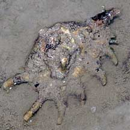
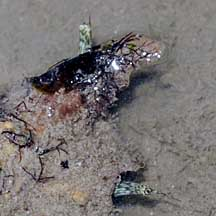
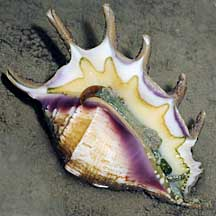
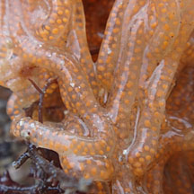
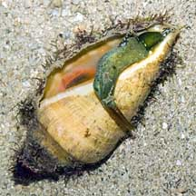
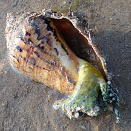
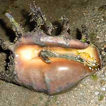

|
|
| shelled snails text index | photo index |
| Phylum Mollusca > Class Gastropoda > Family Strombidae |
| Spider
conch Lambis lambis Family Strombidae updated Sep 2020 Where seen? This amazing large snail with spikes on its shell is often seen on our Southern shores near reefs. Although large, it is often overlooked because the upperside of the shell is very well camouflaged. Elsewhere, it is considered common on reef flats and on coral-rubble bottoms or in mangrove areas, usually associated with fine red algae on which it feeds. Often occurring in colonies. In shallow water, from low tide levels to a depth of about 5 m. Features: 10-20cm long. Shell thick heavy, lip flared with six spines. The flared shell protects the long proboscis as the animal sweeps the bottom for titbits.Upperside usually well encrusted and thus blends with the surroundings. Shell opening pearly and pinkish with orange or yellow tints. Body is olive-brown with white spots. Large eyes on eyestalks, each eyestalk has a tentacle, the purpose of which is not known. Like other conch snails, it hops using the knife-like operculum at the tip of a long muscular foot. The spines on the shell may improve stability and prevent the snail from toppling over as it hops. |
 Pulau Jong, Aug 06 |
 Tanah Merah, Dec 09 |
 Eyes sticking out from under the shell. |
 Tanah Merah, Dec 09 |
 Laying bright orange egg string. Terumbu Hantu, Apr 12 |
 Orange egg string. Terumbu Hantu, Apr 12 |
| What does it eat? It grazes on
fine red algae. Look ma, no spines: The long spines on its shell are found only on adults and gives it its common name. The shell of young snails look like large volutes. Male and female snails look very different. The shell of the males usually smaller and with shorter spines on the outer lip. Mama snails lay bright orange egg strings. |
|
 A young snail that hasn't developed spines on its shell yet. Pulau Jong, Jul 07 |
 A young snail that hasn't developed spines on its shell yet. Tanah Merah, Feb 12 |
| Human uses: Where common, it is
often collected for food by coastal populations, and the shell used
in shellcraft. Appears in markets in the northern Philippines and
in Fiji Islands. Status and threats: The spider conch is listed as 'Vulnerable' on the Red List of threatened animals of Singapore. According to the Singapore Red Data Book: it is "rare and no longer as abundant as in the 1960's". Like other creatures of the intertidal zone, they are affected by human activities such as reclamation and pollution. Trampling by careless visitors and over-collection for their shells can also have an impact on local populations. |
| Spider conch snails on Singapore shores |
On wildsingapore
flickr
|
| Other sightings on Singapore shores |
 Pulau Senang, Jun 10 Photo shared by Loh Kok Sheng on his flickr. |
| A spider conch
flipping itself back, Sisters Island, May 2013 Shared by Heng Pei Yan |
A spider conch
flipping itself back, Tanah Merah, Dec 09
Video clip shared by Marcus Ng on his flickr. |
| Terumbu Pempang
Laut, Apr 11 |
Links
References
|